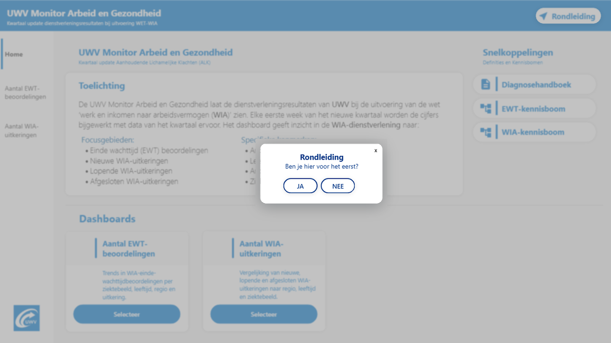

Home Page
When illness becomes more than a sick day
Everyone gets sick once in a while. You wake up with a runny nose, blocked ears and that familiar thought: 'here we go again'. You call in sick, stay in bed for a few days and wait for it to pass. Luckily, in the Netherlands, employees working under a regular employment contract do not immediately have to worry about losing their income when they are temporarily unable to work. Once you feel better, you return to your job.
But what if recovery takes longer than expected? What if it was not just a cold, but a signal of something more serious? What if your health gradually gets worse instead of better, and despite reintegration efforts from both you and your employer, you are still unable to return to work after two years? At that point, your employer is no longer legally responsible for continuing your salary payments. Under certain conditions, this is when you can apply for a WIA-uitkering at UWV.
UWV is the Dutch Employee Insurance Agency: an executive public organisation working under the mandate of the Ministry of Social Affairs and Employment, responsible for implementing employee insurance schemes and supporting people with reintegration into the working society after unemployment, illness and disability-related income support. The law 'Wet Werk en Inkomen naar Arbeidsvermogen' (WIA) is the Dutch work-incapacity benefit scheme for people who, after two years of illness, are still partly or fully unable to earn their previous income, combining income protection with a focus on reintegration where possible.
Public Scrutiny and Distrust in UWV's WIA-services
A public safety net matters most when people’s health, ability to work and financial security are under pressure. In recent years, UWV’s delivery of the WIA has faced intense, but justified public and media scrutiny (📰NOS). Clients have had to wait too long for socio-medical assessments, leaving them in uncertainty about their income, future and opportunities for reintegration. UWV also acknowledged errors in the calculation of the daily wage used to determine the right to (and height of) safety benefits that began between 2020 and 2024 (🏛️UWV Statement). As a result, some clients, whom UWV had already deemed too ill to work, may have only partially (or never) received the help they were entitled to. These were not merely administrative inaccuracies: they affected people’s financial security, wellbeing and trust in public institutions.
Heb je zelf een WIA-uitkering en maak je je zorgen over een mogelijke fout in de berekening? Raadpleeg dan de officiële informatie van UWV over het herstel van WIA-uitkeringen: 🏛️UWV Hulp: Hersteloperatie WIA
Transparency as a Form of Responsibility
UWV has invested in recovery activities, improvements to quality management, programmes centred on the human dimension in public service, and broader organisational changes intended to strengthen its ability to identify, discuss and learn from problems (🏛️ Rijksoverheid: Hersteloperatie). Complexity may help explain how risks arise, but it does not remove responsibility. Meaningful improvement requires both: acknowledging what went wrong and creating the conditions to prevent it from happening again.
Accountability is not only about taking action behind the scenes; it is also about making that action visible, understandable and open to scrutiny through transparency. People should be able to understand how UWV operates, how many clients request its support, what the figures mean and which developments can be observed over time. Part of our wider ambition was to communicate factually, carefully and respectfully what was happening in the Netherlands at the intersection of health, employment and work incapacity, and how those societal developments translated into pressure on UWV’s services.

UWV Monitor Arbeid & Gezondheid
During my time as Senior Business Intelligence Advisor at the Socio-Medical Affairs Division, I developed the UWV Monitor Arbeid & Gezondheid which was part of UWV's broader strategy to both facilitate data-driven decision making internally as well as provide transparency externally. This dashboard provides a coherent view of UWV’s performance in it's execution of the WIA-law. It brings together complex medical, operational and administrative information and presents it in a structured, accessible and unambiguous way.
The monitor provides insight into the volume and composition of clients entering the WIA process, the diagnostic categories associated with their cases, the number of medical assessments completed and the eventual outcome of those assessments. It also shows which type of WIA benefit clients ultimately receive, or whether they do not qualify for a WIA benefit, and allows these outcomes to be examined across different age groups, regions, periods and diagnoses.
The monitor made it possible to explore key patterns in WIA service delivery, such as which health conditions occur most frequently, how assessment volumes develop over time, and whether and how specific diagnose/age/region combinations were tied to specific assessment outcomes. Its longer-term ambition was to connect these insights to employment-sector data, helping UWV better understand which industries and demographic groups may face a higher risk of long-term work incapacity and how reintegration pathways develop after illness. Rather than drawing simplistic conclusions from complex medical and social data, the monitor provided a reliable evidence base for better questions, better conversations and more transparent decision-making.
WIA Medical Assessments-Page
 Selected information has been blurred to protect
non-public content that was still
awaiting
publication.
Selected information has been blurred to protect
non-public content that was still
awaiting
publication.
From Sensitive Operational Data to Public Transparency
The original idea came from a key stakeholder who worked close to the operational process as an insurance physician. From his daily experience, he recognised the need to bring the available information together in a way that was clear, clean, transparent and consistent. Together we worked out an idea where the initial objective was to provide internal UWV employees with a shared and reliable view of the figures.
As the project developed, the ambition grew. Rather than limiting the monitor to internal use, we began exploring how it could eventually be published on UWV.nl, making the information available to citizens, researchers, journalists. As well, it was intended to be a means to report back to the Ministry of Social Affairs and Employment in The Hague.
That change in ambition fundamentally expanded the scope of the project. An internal management dashboard can rely on organisational context and specialist knowledge. A public monitor must stand on its own. Its definitions must be understandable, its visual language must be accessible, its figures must be unambiguous and its treatment of sensitive information must withstand extensive public, legal and ethical scrutiny.
We therefore had to get it right.
I take particular pride in having had the opportunity to develop this project from beginning to end. Not only because I got to develop personally and professionally very quickly, but more so because it served something that was much bigger than just that. UWV's shortcomings should not be minimised. At the same time, I feel that media rarely tell the complete story. In my experience, the organisation was full of committed people working in good faith to provide a dependable safety net for those who needed it. The mistakes UWV made did not reflect the intentions of the colleagues I worked with. On the contrary, I saw how seriously people took their social responsibility and how hard they worked to help clients in all different kinds of roles, often moving within a highly complex legal and operational environment. I believe that transparency, with products like these, also allows public debate to shift from merely exposing problems to identifying structural improvements.
Technical Development, Privacy and Security
On a technical level, I designed, developed, implemented and maintained the complete BI solution. My responsibilities covered the full data chain: integrating multiple source systems, developing and managing ETL processes, creating the underlying data model, defining business logic and DAX measures, and building the final Power BI report.
With my UX/UI background, a great portion of my time I invested in understanding which story needed to be told, and what the best way is to make that story accessible to as many people as possible. In collaboration with dedicated UX-designers, we accomplished this by following WCAG-guidelines to allow anyone with certain limitations to use the dashboard to navigate it intuitively in a way that catored to them. In addition, we added a full 'First time here?'-tour to guide new users through all the features in the dashboard. All of which we implemented according to UWV-branding.
I also worked closely together with Public-Affairs and Public-Relations colleagues, as well as Communications and Legal Advisors. The underlying datasets contained millions of records relating to highly sensitive medical and socio-economic information. Privacy and security therefore had to be built into the solution from the beginning, rather than treated as a final compliance check.
The objective was to reveal meaningful patterns—never individual people.
'First time here?'-Tour

Followed WCAG-guidelinesBI as the Right Tool
The Monitor Arbeid & Gezondheid is one of the projects I am most proud of because it demonstrates what business intelligence can mean in a societal context.
It was not simply about building another dashboard or making large amounts of data visually attractive. It was about using data to make a complex public service more transparent, to support accountability and to create a shared understanding of developments affecting people’s health, employment and financial security.
For me, that is what responsible BI should do: not present data merely because it is available or to report back-up, but turn it into information that helps the operation and that makes difficult processes more understandable, discussable and ultimately more manageable. The project also reinforced something I strongly believe: transparency is not a threat to public organisations. When it is approached carefully and responsibly, it is an essential part of rebuilding trust.
The project also reinforced something I strongly believe: transparency is not a threat to public organisations. When it is approached carefully and responsibly, it is an essential part of rebuilding trust.
Links